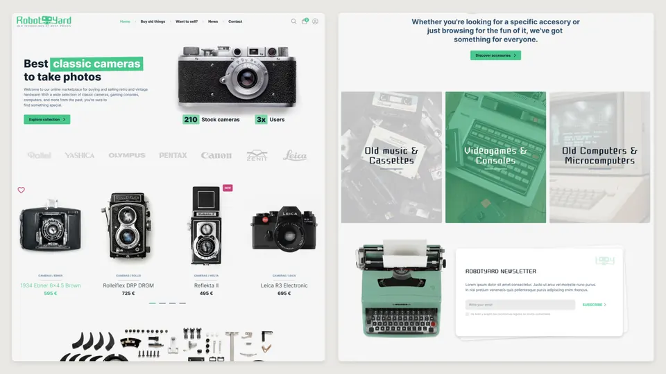

04 — Branding · E-commerce
Robotyard
Robotyard es un marketplace pensado para un tipo de comprador muy concreto: quienes compran y venden cámaras antiguas, consolas y ordenadores clásicos. Necesitaba una marca y una tienda tan cuidadas como el propio hardware.

Resumen
Robotyard es un marketplace de e-commerce de tecnología antigua —cámaras clásicas, consolas retro, ordenadores vintage y sus accesorios— pensado para coleccionistas a quienes importan tanto el estado y la procedencia como el precio.
Me encargué del proyecto de principio a fin: análisis de mercado, estrategia de marca, logotipo e identidad, y la propia web de e-commerce, diseñada para convertir de verdad a visitantes en compradores y vendedores.
Reto
- 01La tecnología vintage es un mercado de nicho obsesionado con el detalle: un aspecto genérico de marketplace habría restado valor a los productos y al público.
- 02La marca necesitaba un guiño visual a la propia categoría, sin caer en lo kitsch ni parecer una tienda de novedades.
- 03La web tenía que permitir navegar por categorías (cámaras, consolas, ordenadores, música) con la misma facilidad con la que captaba leads de quienes querían vender.
- 04Todo —logotipo, papelería, guías y web— debía mantenerse unido como un sistema coherente y versátil.
Proceso
Empecé con un análisis de mercado y una estrategia de marca, y después diseñé un logotipo de concepto robot en verde, una paleta de cinco colores (Chinese Black, Alice Blue, Fuchsia Rose, Yankees Blue y Ocean Green), papelería y una tipografía display juguetona, antes de construir la tienda de captación de leads a su alrededor.


Solución
Un sistema de marca completo —logotipo, paleta de color, tipografía y papelería— acompañado de una web de e-commerce limpia y orientada a captar leads, que permite a los coleccionistas navegar por categorías y a los vendedores contactar con la misma facilidad.
De un vistazo